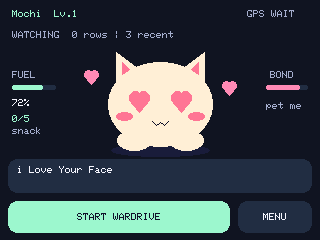
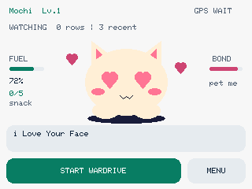
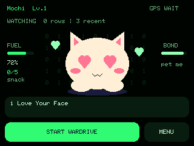
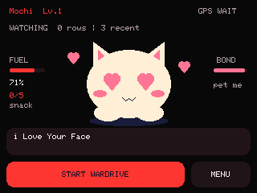
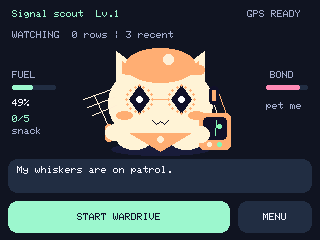
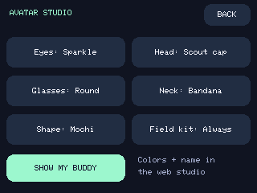

Adventure is dinner.
Start a wardrive from the face. Every five new Wi-Fi networks successfully logged with GPS earn a snack. Background watching and petting never feed your buddy.
SMALL ROBOT. BIG PERSONALITY.
A curious little signal goblin that lives on your dashboard. Explore networks, spot interesting signals, collect snacks, and get a little love along the way.
For the official M5Stack StackChan K151 · GPS on blue Port C · microSD
Start a wardrive from the face. Every five new Wi-Fi networks successfully logged with GPS earn a snack. Background watching and petting never feed your buddy.
Camera, tracker, gadget, and drone signal clues appear with confidence and evidence. Continuing encounters stay quiet. Your pet stays front and center.
Tap the face or stroke the head sensor for heart eyes and affection. Speech starts off; enable Voice for occasional loving phrases on deliberate face taps. Idle glances and silly panic are always part of the personality.
A FACE FOR EVERY ADVENTURE
Actual 320 × 240 firmware captures.
Choose your theme in Look & Themes.




ONE USB CABLE. ONE LITTLE FRIEND.
Install Dash-Chan in desktop Chrome or Edge. Use a USB data cable, close serial monitors, and stop any active wardrive first.
Official StackChan K151 only. A bare CoreS3 or DIY StackChan has different wiring.
Choose its USB serial port. You can download the full original flash before installing.
The installer checks downloads and written flash. It preserves NVS calibration and does not touch your SD card.
Installation replaces the running firmware. A chip check cannot identify the robot model. Keep your factory backup private.
Loading verified release information…
No account, driver installer, or network connection on the robot required.
DASH-CHAN AVATAR STUDIO
Six eye styles. Three outfit layers. A tiny field kit.
Build a companion you recognize as yours.
Tiny paws. Big curiosity.
Tap your buddy for love. This is an animation preview.
The antenna and receiver are personality props, not a signal bearing.
During a wardrive, your buddy holds a toy antenna and pocket receiver. Fresh GPS movement adds a cruising animation. On the robot, choose Auto, Always, or Off under Look & Themes → Avatar Studio. Alerts still take priority, and your mute preferences stay yours.


FIRST ADVENTURE CHECKLIST
Connect Unit GPS to blue Port C. In Menu → GPS & SD, select your unit's baud (9600, 38400, or 115200). Go outside with a clear sky view. GPS READY requires a fresh fix, at least four satellites, and HDOP ≤ 5.
Insert a FAT32 microSD. Tap START WARDRIVE. Waiting for GPS is normal; invalid locations are never invented. Tap STOP & SAVE before removing the card or shutting down.
Files live in /wardrives/ as WiGLE 1.4 CSV. Upload them to your own WiGLE account. Detections have separate event logs. Coordinates and addresses stay on your SD; nothing uploads automatically.
Choose a buddy and theme, set volume and alert tone, then try the synthetic Axon demo. Voice starts OFF. Master sound OFF silences everything. Use the top touch sensor for quiet scritches. Set lively motion for expressive reactions or gentle motion for a calmer copilot.
Passive clues for Axon/body cameras, Flock/ALPR vendors, camera glasses, Find My/DULT and other trackers, Flipper, Biscuit-family, Pineapple-style devices, Pwnagotchi, Remote ID, and more. Names and vendor prefixes can be spoofed or shared. This does not prove police presence, recording, ownership, or malicious intent. See the method-by-method coverage table.
By default it announces an encounter once, keeps updating its recent entry, and rearms after five minutes without seeing it. A separate family cooldown reduces alerts from rotating addresses. Optional five-minute reminders and confidence filtering are in Detection settings. The encounter ledger is bounded to 128 entries.
Use desktop Chrome or Edge on HTTPS, a data cable, and close anything using the serial port. Hold the bottom RST button beside the SD slot for about three seconds; release when its LED turns green, then choose the newly appearing ESP32 port. If flashing is interrupted, repeat the installer in boot mode. Never erase the whole flash to fix a connection. See troubleshooting and restore instructions.
It is an offline personality engine with original animation, bounded servo gestures, and synthesized phrases. It passively examines radio metadata. It does not join networks, jam, deauthenticate, decrypt, or store Wi-Fi data payloads. The ESP32-S3 sees 2.4 GHz Wi-Fi and BLE; it cannot provide 5 GHz, Bluetooth Classic, or sub-GHz coverage.
Only new Wi-Fi BSSIDs successfully written during a wardrive with a usable GPS fix count. Five discoveries earn +12 fuel; each earns XP. BLE, petting, synthetic demos, and background watching don't feed it. Per-session approximate deduplication may miss a snack on very large drives, but avoids farming the same network repeatedly within a session.
BUILT ON COMMUNITY CURIOSITY
Detection research and inspiration: Dragon Detector, Colonel Panic's Unified Blue, and SquachWatch. Wardriving references: Midwest Gadgets' Piglet and JustCallMeKoko's Dual Band Wardriver. Hardware support by M5Stack; browser flashing by Espressif's esptool-js.
Mochi, Sprout, and Orbit are original Dash-Chan designs. BWM and VTS marks are supplied by their owners. References do not imply endorsement. Full pinned sources, licenses & attributions ↗ · Browser library notices.